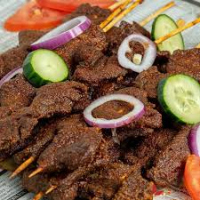

Discover the Best Nigerian Street Foods
Nigerian street food is delicious, affordable, and part of everyday life across the country.
Featured Street Foods

Suya
Spicy grilled beef served with onions and pepper.
Puff Puff
Deep fried dough snack loved across Nigeria.
Akara
Bean cakes fried in oil and often eaten with bread.